| Sex | Pclass | Fare | Cabin | |
|---|---|---|---|---|
| 0 | male | 3 | 7.2500 | NaN |
| 1 | female | 1 | 71.2833 | C85 |
| 2 | female | 3 | 7.9250 | NaN |
| 3 | female | 1 | 53.1000 | C123 |
| 4 | male | 3 | 8.0500 | NaN |
| 5 | male | 3 | 8.4583 | NaN |
| 6 | male | 1 | 51.8625 | E46 |
| 7 | male | 3 | 21.0750 | NaN |
| 8 | female | 3 | 11.1333 | NaN |
| 9 | female | 2 | 30.0708 | NaN |
| 10 | female | 3 | 16.7000 | G6 |
| 11 | female | 1 | 26.5500 | C103 |
Data Comprehension, Preprocessing
CSCI-866-001: Data Mining & Knowledge Discovery

Lecturer: Dr. Sothea HAS
📋 Outline
Data Sources
Data Quality
Data Preprocessing
Real Examples
Data Sources
Data Sources
Primary
- Data collected directly from the source for a specific purpose.
Example:- Surveys or Questionnaires 🗳️
- Interviews 🎙️
- Observations 🧐
- Experiments 🔬
Secondary
- Data that has already been collected, processed, and made available by others.
Example:- Government publications or reports 📄
- Books and articles 📚
- Online databases and repositories 🌐
- Industry/NGO reports 🏭
Data Sources
Format
Structured
- Highly organized and easily searchable in databases using predefined schemas.
Structure:typically stored in tables with rows and columns.Example:- Spreadsheets: Excel

- CSV files
- Spreadsheets: Excel
Unstructured
- Lacks a predefined format or schema and is typically stored in its raw form.
Structure:Free-form and can betext,images,videos…Example:- Emails/Documents (e.g., Word files, PDFs)
- Social media posts, images, audio, videos
- Web pages…
Data Quality
Data quality
- Someone in 60s said Garbage In, Garbage Out (GIGO)!.
- Data quality is the most important thing in Data Mining.
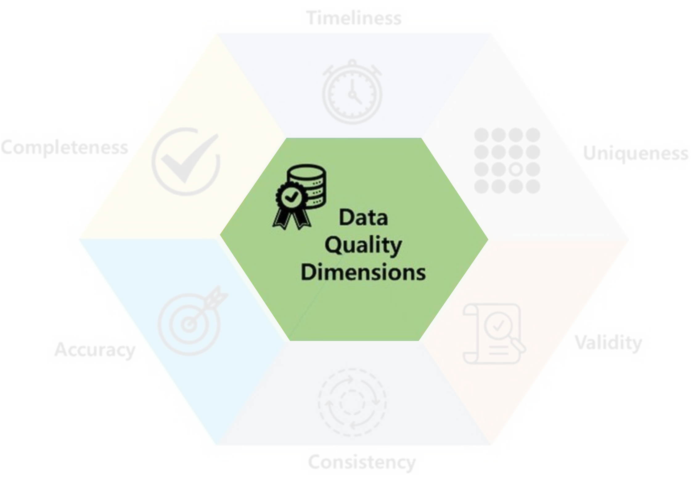
Data quality
Data quality
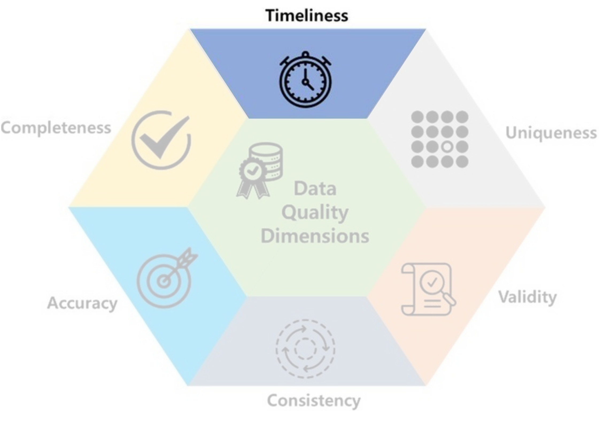
- Timeliness: how up-to-date the data is for its intended use.
- Ex: Temperature of 60s wouldn’t help forecasting tomorrow.
Data quality
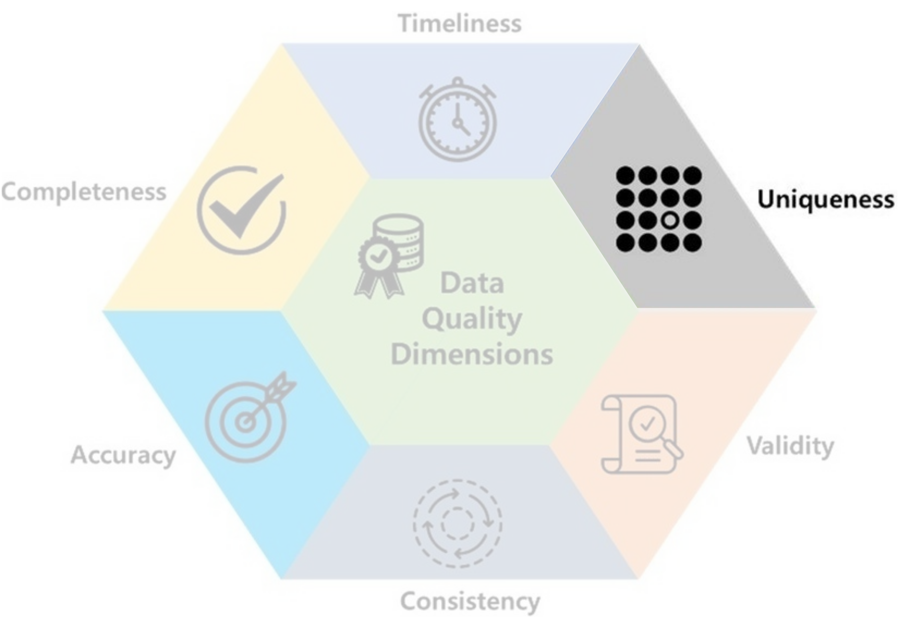
- Uniqueness: data should not be duplicated.
- Ex: Recording the same female heart disease patient many times may lead to a conclude that females have a higher likelihood of developing heart disease.
Data quality
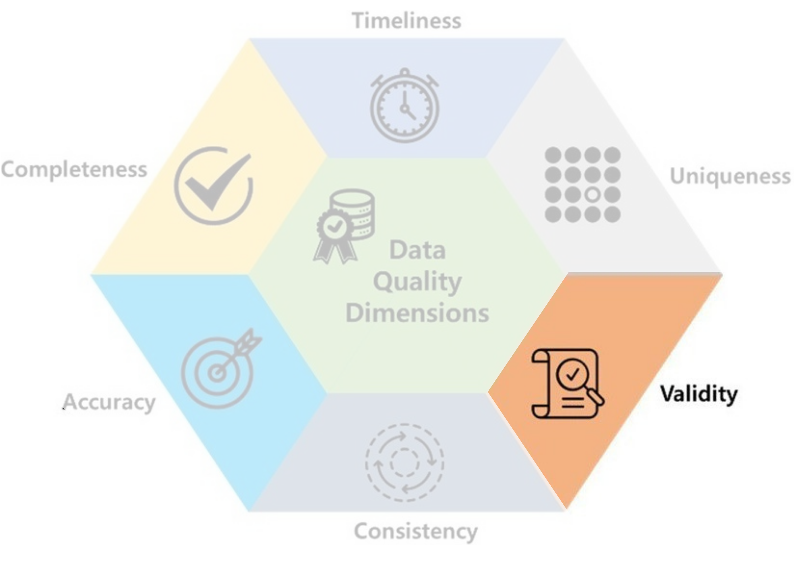
- Validity: data should take values within its valid range.
- Ex: Height & weight should not be 0.
Data quality
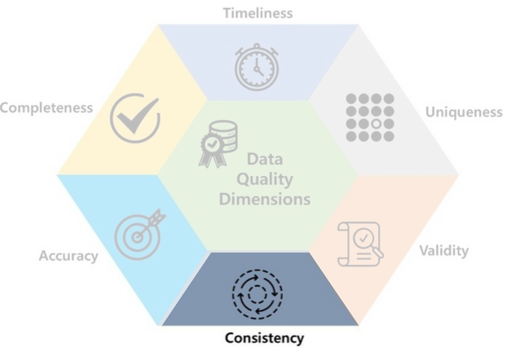
- Consistency: data should be uniform and compatible (format, type…) across different datasets and over time.
- Ex: 15/03/2004 & 03/15/2004, Male & M…
Data quality
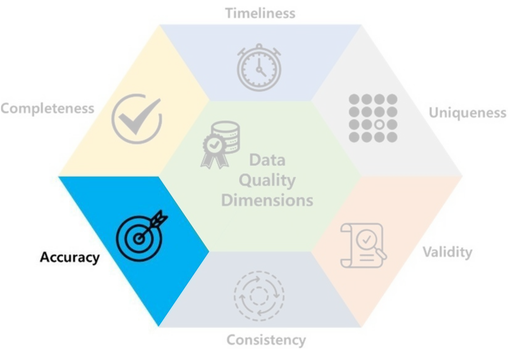
- Accuracy: data should be accurate and reflect what it is meant to measure.
- Ex: You'd likely enter ‘I like DM Course’ in my survey if it's not anonymous.
Data quality
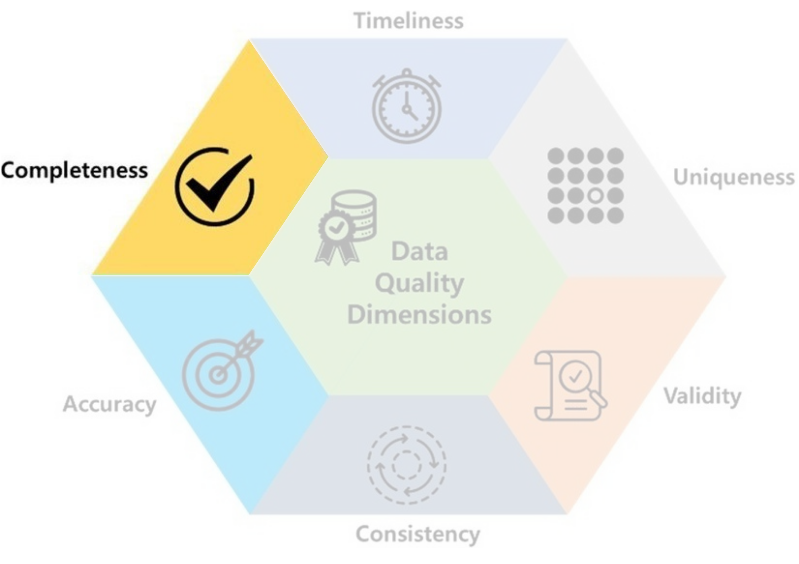
- Completeness: data should not contain missing values.
- Ex: In Lab1,
Cabincolumn of Titanic dataset contains mostlyNaN.
Data quality
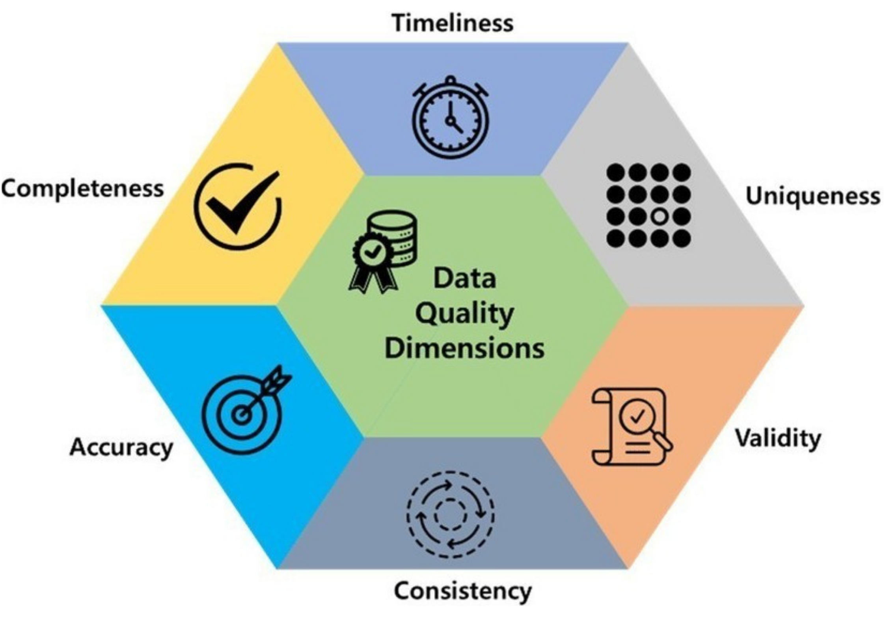
- Data quality includes these 6 factors.
Data quality
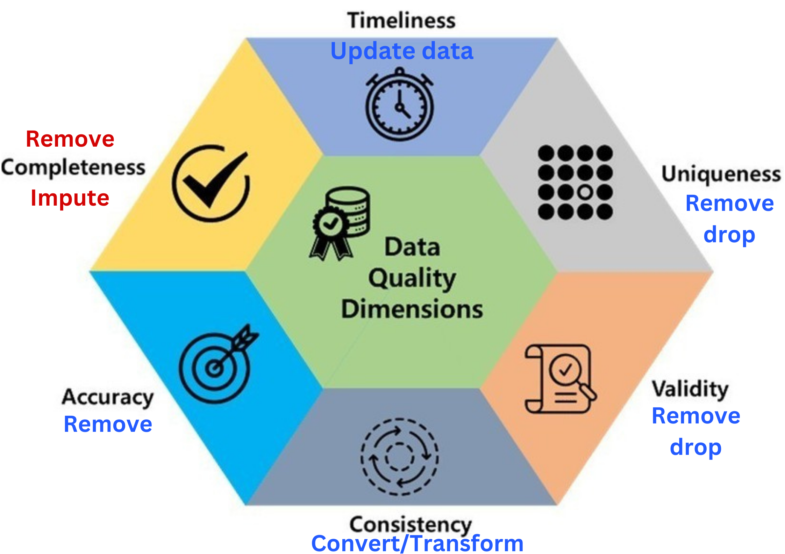
- Data quality includes these 6 factors.
- If there is a problem with any of these, you may ☝️
- For secondary sources, Incompleteness is the common one.
Data Preprocessing
Data preprocessing
Consider an example: Titanic
Data preprocessing
Consider an example
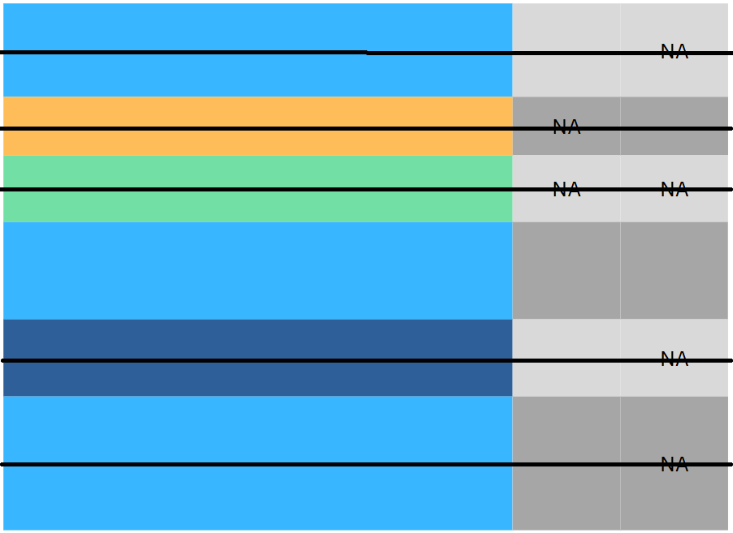
| Sex | Pclass | Fare | Cabin | |
|---|---|---|---|---|
| 0 | male | 3 | 7.2500 | NaN |
| 1 | female | 1 | 71.2833 | C85 |
| 2 | female | 3 | 7.9250 | NaN |
| 3 | female | 1 | 53.1000 | C123 |
| 4 | male | 3 | 8.0500 | NaN |
| 5 | male | 3 | 8.4583 | NaN |
| 6 | male | 1 | 51.8625 | E46 |
| 7 | male | 3 | 21.0750 | NaN |
| 8 | female | 3 | 11.1333 | NaN |
| 9 | female | 2 | 30.0708 | NaN |
| 10 | female | 3 | 16.7000 | G6 |
| 11 | female | 1 | 26.5500 | C103 |
Data preprocessing
Consider an example
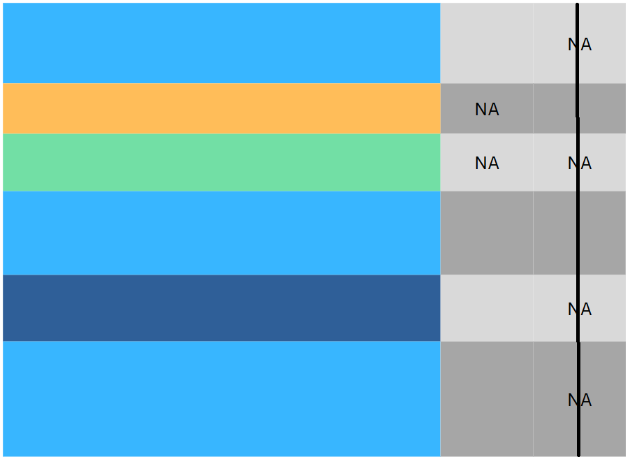
| Sex | Pclass | Fare | Cabin | |
|---|---|---|---|---|
| 0 | male | 3 | 7.2500 | NaN |
| 1 | female | 1 | 71.2833 | C85 |
| 2 | female | 3 | 7.9250 | NaN |
| 3 | female | 1 | 53.1000 | C123 |
| 4 | male | 3 | 8.0500 | NaN |
| 5 | male | 3 | 8.4583 | NaN |
| 6 | male | 1 | 51.8625 | E46 |
| 7 | male | 3 | 21.0750 | NaN |
| 8 | female | 3 | 11.1333 | NaN |
| 9 | female | 2 | 30.0708 | NaN |
| 10 | female | 3 | 16.7000 | G6 |
| 11 | female | 1 | 26.5500 | C103 |
Data preprocessing
Missing values
- Data of \(4\)-\(7\) years old kids.
| Gender | Age | Height | Weight |
|---|---|---|---|
| F | 68 | 0 | 20 |
| F | 68 | 0 | 18 |
| F | 65 | 105 | 0 |
| F | 63 | 0 | 15 |
| F | 68 | 112 | 0 |
| F | 66 | 106 | 0 |
- What’s wrong with this data?
These are probably missing values (
NA,nan,NaN…) in disguise.Question: how do we handle it: Drop or Impute?
Answer: we should at least know what kind of missing values are they: MCAR, MAR or MNAR?
Data Preprocessing
Missing values
Missing Completely At Random (MCAR)
- They are randomly missing.
- Easy to handle with imputation or dropping methods if not so many.
- They don’t introduce bias.
- Removing them does not affect other columns.
- Ex: Missing values do not affect
Age. They are MCAR in this case.
Code
import plotly.graph_objects as go
import plotly.express as px
from plotly.subplots import make_subplots
data_dropped_NA = data_kids.loc[(data_kids.Height > 0) & (data_kids.Weight > 0)]
fig_kid1 = go.Figure(go.Histogram(
x=data_kids.Age,
name="Before dropping NA",
showlegend=True))
fig_kid1.add_trace(
go.Histogram(
x=data_dropped_NA.Age,
name="After dropping NA",
showlegend=True,
visible="legendonly"))
fig_kid1.update_layout(barmode='overlay',
title="Distribution of Age",
xaxis=dict(title="Age"),
yaxis=dict(title="Count"),
width=500,
height=400)
fig_kid1.update_traces(opacity=0.5)
fig_kid1.show()Data Preprocessing
Missing values
Missing At Random (MAR)
- The missingness is related to other columns.
- One can try using those related columns to impute.
- If not too many, model-based imputation often work well: KNN…
- Ex: Most of the missing values are from female children. They are MAR in this case.
Code
count = data_kids.Gender.value_counts()
fig_kid2 = go.Figure(
go.Bar(
x=count.index,
y=count,
name="Before dropping NA"))
count_NA = data_dropped_NA.Gender.value_counts()
fig_kid2.add_trace(
go.Bar(x=count_NA.index,
y=count_NA,
name="After dropping NA",
visible="legendonly"))
fig_kid2.update_layout(barmode='overlay',
title="Distribution of Gender",
xaxis=dict(title="Gender"),
yaxis=dict(title="Count"),
width=500,
height=400)
fig_kid2.update_traces(opacity=0.5)
fig_kid2.show()Data Preprocessing
Missing values
Missing Not At Random (MNAR)
- These are the trickiest, as the missingness is related to the missing values themselves.
- It may require domain-specific knowledge or advanced techniques (more data, external info…).
- It’s hard to judge if missing values are actually MNAR.
- Ex: Very high or very low salaries are often missing from a survey if it’s optional.
- If not so many, dropping is a common solution.
Data Preprocessing
Rules of Thumb
Proportion of NA |
Rules of thumb |
|---|---|
| \(< 5\%\) | Drop/remove rows. |
| \(5-10\%\) | Can be dropped but must be cautious about the type of missing. |
| \(10-20\%\) | Better to be imputed according to their types. |
| \(20-30\%\) | Remove the entire column, if it’s not so important. |
| \(>30\%\) | Remove the entire column. |
Data Preprocessing
Outliers
- Data points that deviate significantly from the majority of observations in a dataset.
- It can influence our analyses: insightful or problematic!
- We can hunt them down using:
- Graphs: Scatterplots, Boxplots or histograms…
- They often fall outside \([\text{Q}_1-1.5\text{IQR},\text{Q}_3+1.5\text{IQR}]\).
Data Preprocessing
Handling outliers
- Not all outliers would affect the analysis (may be ignored).
- We can apply capping (limiting outliers to some values) or Trimming (completely remove them).
- Some transformations may reduce the effect of outliers:
- Z-score: \(x\to \frac{x-\overline{x}}{\sigma_{x}}\) (centered by
mean, scaled bystd). - Min-Max scaling: \(x\to\frac{x-\min}{\max-\min}\in [0,1]\).
- If the data are positive: \(x\to \log(x)\) or \(x\to \sqrt{x}\)
- Z-score: \(x\to \frac{x-\overline{x}}{\sigma_{x}}\) (centered by
- No absolute solution! It depends on the analysis.
Data Preprocessing
Duplicated data
- Duplicated data: repeated row data.
- How/why would they affect the analysis?
- They cause data storage waste.
- They cause misleading analysis/conclusion.
- They affect some model performance (mostly non-parametric).
- They are often removed from the data.
Real Example
Real Example
Titanic Dataset (891 rows, 12 columns)
| Survived | Pclass | Sex | Age | SibSp | Parch | Fare | Cabin | Embarked | |
|---|---|---|---|---|---|---|---|---|---|
| 0 | 0 | 3 | male | 34.5 | 0 | 0 | 7.8292 | NaN | Q |
| 1 | 1 | 3 | female | 47.0 | 1 | 0 | 7.0000 | NaN | S |
Data types:
| Survived | Pclass | Sex | Age | SibSp | Parch | Fare | Cabin | Embarked | |
|---|---|---|---|---|---|---|---|---|---|
| 0 | int64 | int64 | object | float64 | int64 | int64 | float64 | object | object |
Missing values:
| Survived | Pclass | Sex | Age | SibSp | Parch | Fare | Cabin | Embarked | |
|---|---|---|---|---|---|---|---|---|---|
| 0 | 0 | 0 | 0 | 86 | 0 | 0 | 1 | 327 | 0 |
- Question: What should we do in the preprocessing step?
- Answer: We should:
- Convert Survived and Pclass to be
object. - Handle missing values: drop 1
NAof Fare, remove column Cabin and study Age.
- Convert Survived and Pclass to be
Real Example
Titanic Dataset (891 rows, 12 columns)
- Convert data types:
- Study missing values in
Age:- Impact on qual columns:
Code
import seaborn as sns
import matplotlib.pyplot as plt
sns.set(style="whitegrid")
fig, axs = plt.subplots(2, 4, figsize=(6, 3.75))
col_qual = ['Survived', 'Pclass', 'Sex', 'Embarked']
for i, va in enumerate(col_qual):
sns.countplot(data, x=va, ax=axs[0,i], stat = "proportion")
axs[0,i].bar_label(axs[0,i].containers[0], fmt="%0.2f")
sns.countplot(data.dropna(), x=va, ax=axs[1,i] , stat = "proportion")
axs[1,i].bar_label(axs[1,i].containers[0], fmt="%0.2f")
if i == 0:
axs[0,i].set_ylabel("Before remove NA")
axs[1,i].set_ylabel("After remove NA")
else:
axs[0,i].set_ylabel("")
axs[1,i].set_ylabel("")
plt.tight_layout()
plt.show()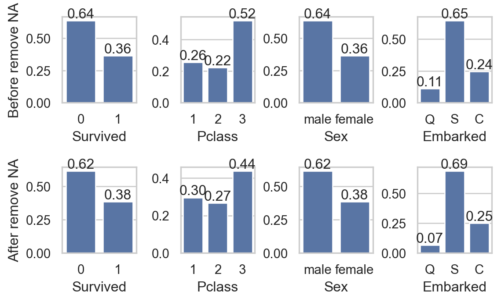
Real Example
Titanic Dataset (891 rows, 12 columns)
- Impact on quan columns:
Code
sns.set(style="whitegrid")
fig, axs = plt.subplots(2, 3, figsize=(6, 3.5))
col_quan = ['SibSp', 'Parch', 'Fare']
for i, va in enumerate(col_quan):
sns.histplot(data, x=va, ax=axs[0,i], kde=True)
sns.histplot(data.dropna(), x=va, ax=axs[1,i], kde=True)
if i == 0:
axs[0,i].set_ylabel("Before remove NA")
axs[1,i].set_ylabel("After remove NA")
else:
axs[0,i].set_ylabel("")
axs[1,i].set_ylabel("")
plt.tight_layout()
plt.show()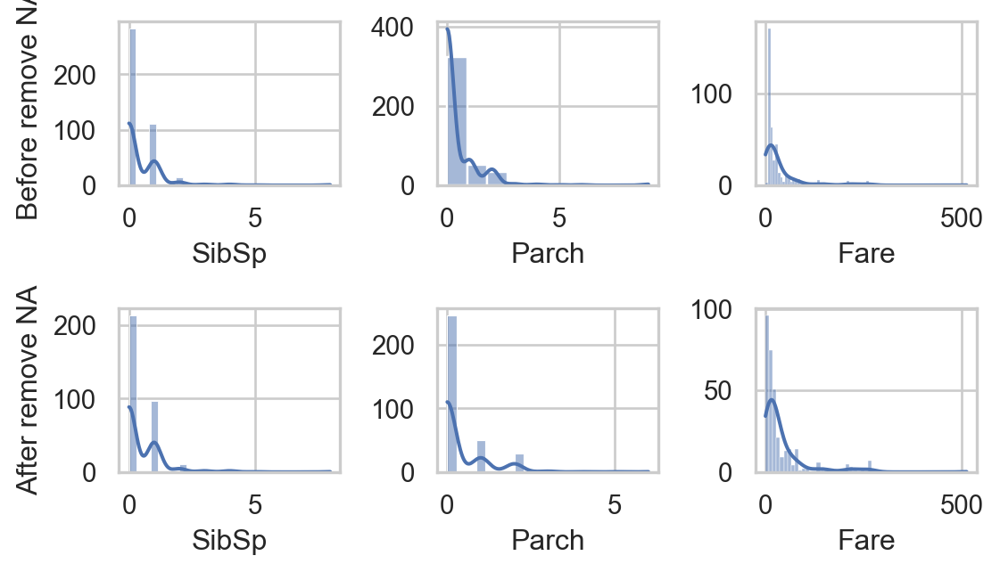
- Do you think that removing
NAgreatly affects other columns?
- Study missing values in
Age:- Impact on qual columns:
Code
import seaborn as sns
import matplotlib.pyplot as plt
sns.set(style="whitegrid")
fig, axs = plt.subplots(2, 4, figsize=(6, 3.75))
col_qual = ['Survived', 'Pclass', 'Sex', 'Embarked']
for i, va in enumerate(col_qual):
sns.countplot(data, x=va, ax=axs[0,i], stat = "proportion")
axs[0,i].bar_label(axs[0,i].containers[0], fmt="%0.2f")
sns.countplot(data.dropna(), x=va, ax=axs[1,i] , stat = "proportion")
axs[1,i].bar_label(axs[1,i].containers[0], fmt="%0.2f")
if i == 0:
axs[0,i].set_ylabel("Before remove NA")
axs[1,i].set_ylabel("After remove NA")
else:
axs[0,i].set_ylabel("")
axs[1,i].set_ylabel("")
plt.tight_layout()
plt.show()Real Example
Titanic Dataset (891 rows, 12 columns)
- As removing
NAbarely impacts other columns, we can- Drop rows with
NAor - Impute with
meanormedian.
- Drop rows with
data.fillna(value = data[['Age']].mean(), inplace = True)
data.iloc[:,[1,2,4,5,6,7,9,10]].isna().sum().to_frame().T| Survived | Pclass | Sex | Age | SibSp | Parch | Fare | Embarked | |
|---|---|---|---|---|---|---|---|---|
| 0 | 0 | 0 | 0 | 0 | 0 | 0 | 0 | 0 |
Ageafter imputation:
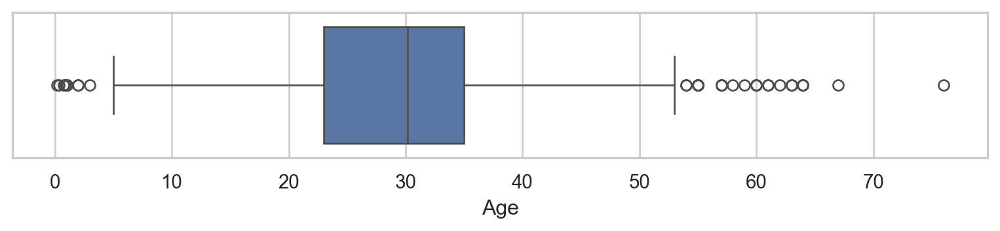
Summary & tips
- Preprocessing data can greatly boost the analysis and performance of the models.
- 🔑 Keys points to consider:
- Are data types correctly enocded (quan or qual)?
- Are there any duplicated data?
- Are there any missing values?
- Are there any outliers?
- Ways to handle them depend on the analysis, and there is no absolute solution.
- Everything often comes down to trying!
🥳 Yeahhhh….
Let’s Party… 🥂